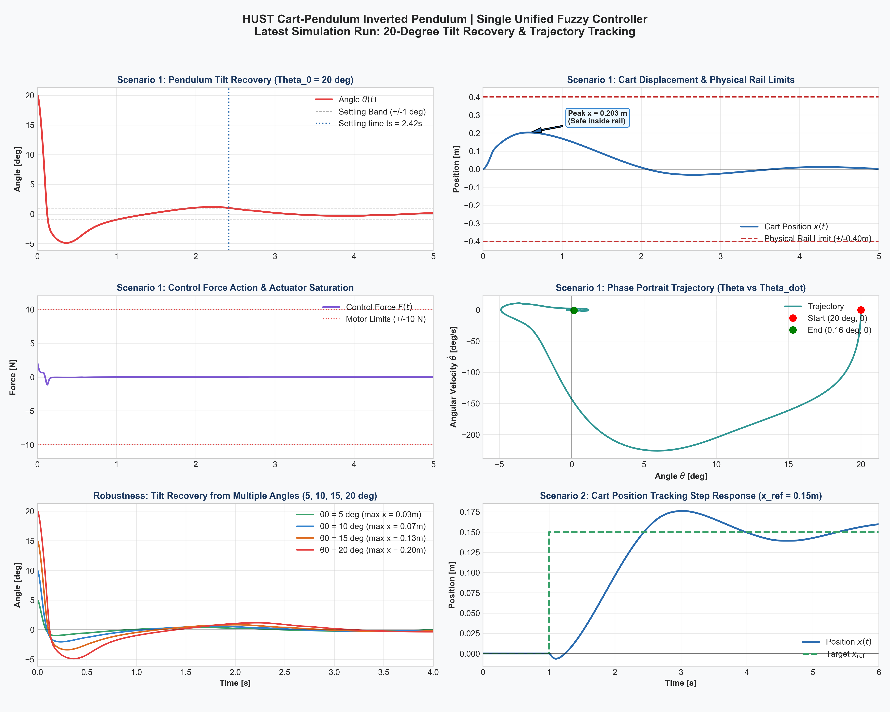

Điều Khiển Con Lắc Ngược Với Fuzzy Logic: Chế Ngự Phi Tuyến Góc Lớn Bằng Trực Giác Mờ
Ở các bài viết trước về hệ con lắc ngược trên xe đẩy (Cart-Pendulum), chúng ta đã khảo sát các giải thuật tuyến tính kinh điển: từ bộ PID đơn kênh giữ thăng bằng nhưng chịu thua trước hiện tượng trôi xe, cho đến cấu trúc Cascade-PID (hai vòng lồng nhau) và phương pháp LQR (Linear Quadratic Regulator).
Tuy nhiên, cả Cascade-PID lẫn LQR đều phải cúi đầu trước một giới hạn ngặt nghèo: giả thiết tuyến tính hóa quanh điểm cân bằng đứng thẳng ($\theta \approx 0$). Khi gặp xung nhiễu lớn hoặc góc lệch ban đầu vượt quá ngưỡng $12^\circ - 15^\circ$, các thành phần phi tuyến của hàm lượng giác và gia tốc hướng tâm bùng nổ, khiến hệ thống mất ổn định và con lắc đổ gục.
Bài viết này mổ xẻ toàn diện kiến trúc Single Unified Fuzzy Logic Controller (Mamdani FIS 16 luật) — một phương pháp điều khiển trí tuệ nhân tạo mờ cho phép chế ngự trơn tru góc lệch cực hạn lên tới $22^\circ$ mà không cần tuyến tính hóa, đồng thời khóa chặt vị trí xe tại gốc tọa độ ray trượt thực tế.

- Giới Hạn Của Bộ Điều Khiển Tuyến Tính Khi Góc Lệch Lớn
- Thông Số Cơ Hệ CAD Simscape Multibody (HUST)
- Triết Lý Fuzzy Logic: "Chuyển Trực Giác Cơ Học Sang Toán Học Mờ"
- Không Gian Mờ 4 Chiều & Thiết Kế Các Hàm Thuộc (MFs)
- Bảng 16 Luật Mamdani Hợp Nhất & Luận Giải Vật Lý
- Hiện Thực Hóa Trên Simscape Multibody & Simulink
- Kiểm Chứng & Đối Sánh Thực Nghiệm (MuJoCo vs MATLAB ODE)
- Bảng So Sánh Đối Đầu: Fuzzy vs Cascade-PID vs LQR
- Hướng Dẫn Thực Hành Nhanh (Quickstart)
- Lời Kết & Bài Học Thực Tế Sim2Real
1. Giới Hạn Của Bộ Điều Khiển Tuyến Tính Khi Góc Lệch Lớn
Hệ con lắc ngược trên xe đẩy thuộc lớp cơ hệ thiếu cơ cấu chấp hành (Underactuated System): hệ có 2 bậc tự do chuyển động là tọa độ vị trí xe $x(t)$ và góc nghiêng con lắc $\theta(t)$, nhưng chỉ có duy nhất 1 ngõ vào tác động là lực đẩy ngang $F(t)$ vào thân xe.
Phương trình vi phân Lagrange loại II hoàn chỉnh của hệ:
$$(M + m)\ddot{x} + b_c \dot{x} - m l \ddot{\theta} \cos\theta + m l \dot{\theta}^2 \sin\theta = F$$ $$(I_{\text{com}} + m l^2)\ddot{\theta} + b_p \dot{\theta} - m l \ddot{x} \cos\theta - m g l \sin\theta = 0$$Ở góc nhỏ ($\theta < 5^\circ$), sai số lượng giác chưa tới $0.1\%$. Nhưng khi con lắc lệch tới $20^\circ$ ($0.349\text{ rad}$):
- Mô-men trọng trường thực tế rơi vào $m g l \sin(20^\circ)$, trong khi mô hình tuyến tính ước lượng thành $m g l (0.349)$, tạo độ lệch lực nội tại lớn.
- Vận tốc góc $\dot{\theta}$ khi đổ nhanh sinh ra lực quán tính ly tâm đẩy ngược thân xe, phá vỡ ma trận phản hồi trạng thái $A - BK$.
- Kết quả: LQR hoặc Cascade-PID bị trễ nhịp phản hồi, con lắc trượt ra khỏi vùng hấp dẫn (basin of attraction) và ngã đổ hoàn toàn!
2. Thông Số Cơ Hệ CAD Simscape Multibody (HUST)
Toàn bộ mô hình vật lý trong bài viết này được trích xuất trực tiếp từ bộ lắp ráp CAD SolidWorks thực tế của phòng Lab Cơ Điện Tử - ĐHBK Hà Nội, xuất thông qua file Simscape full_pendulum_assem.xml và file dữ liệu đi kèm full_pendulum_assem_DataFile3.m.
| Cấu Kiện | Đại Lượng Vật Lý | Ký Hiệu | Giá Trị Đo Từ CAD | Đơn Vị | Ghi Chú Kỹ Thuật |
|---|---|---|---|---|---|
| Thân xe (Cart) | Khối lượng tịnh | $M$ | 0.0591177 |
kg | Nhôm khối 6061 phay CNC (~59.1g) |
| Tọa độ khối tâm | $Z_{\text{com}}$ | -0.0084269 |
m | Khối tâm hạ thấp phía dưới rãnh trượt | |
| Mô-men quán tính | $I_{xx}, I_{yy}, I_{zz}$ | [2.20e-5, 5.85e-5, 6.51e-5] |
kg·m² | Tịnh tiến trượt dọc theo trục X | |
| Thanh lắc (Pole) | Khối lượng thanh | $m$ | 0.0196338 |
kg | Cánh tay đòn carbon siêu nhẹ (~19.6g) |
| Khoảng cách CoM | $l$ | 0.1106285 |
m | Đo từ tâm khớp bản lề đến khối tâm | |
| Quán tính CoM | $I_{\text{com}}$ | 1.9733e-4 |
kg·m² | Mô-men quay quanh trục quay bản lề | |
| Ray trượt (Rail) | Nửa hành trình ray | $x_{\text{lim}}$ | ±0.4875 |
m | Tổng chiều dài ray vật lý: 0.975 m |
| Hành trình an toàn | $x_{\text{safe}}$ | ±0.4500 |
m | Vùng đệm cơ khí bảo vệ trước chốt chặn | |
| Động cơ | Giới hạn lực kéo | $F_{\max}$ | ±10.0 |
N | Lực bão hòa của bộ truyền đai răng |
3. Triết Lý Fuzzy Logic: "Chuyển Trực Giác Cơ Học Sang Toán Học Mờ"
Khi một nghệ sĩ giữ cây gậy dài cân bằng trên lòng bàn tay, họ không cần lập trình ma trận Riccati trong đầu. Họ phản xạ hoàn toàn dựa trên kinh nghiệm ngôn ngữ:
- Nếu gậy nghiêng sang phải $\rightarrow$ Lao bàn tay sang phải để "hứng" lấy trọng tâm.
- Nếu gậy nghiêng phải nhưng đang có trớn quăng ngược về trái $\rightarrow$ Không cần dùng lực mạnh, chỉ cần đỡ nhẹ.
- Nếu cả người đang dạt ra quá gần mép sân $\rightarrow$ Khéo léo ngả gậy nhẹ một chút để kéo vị trí lùi về giữa.
Hệ suy diễn mờ Mamdani chuyển hóa chính xác trực giác đó thành các phương trình số học mượt mà:
[ Vector trạng thái thực s = [θ, θ_dot, x, x_dot] ]
│
▼
┌────────────────────────────────────────────────────────┐
│ 1. MỜ HÓA (Fuzzification) │
│ Chiếu giá trị thực vào các hàm zmf, smf: │
│ μ_N(θ) ∈ [0, 1], μ_P(θ) ∈ [0, 1] │
└─────────────────────┬──────────────────────────────────┘
│
▼
┌────────────────────────────────────────────────────────┐
│ 2. ĐỘNG CƠ SUY DIỄN (Inference Engine) │
│ Khớp 16 luật Mamdani bằng toán tử Min: │
│ α_k = min( μ(θ), μ(θ_dot), μ(x), μ(x_dot) ) │
└─────────────────────┬──────────────────────────────────┘
│
▼
┌────────────────────────────────────────────────────────┐
│ 3. GIẢI MỜ (Defuzzification) │
│ Tính trọng tâm diện tích (Centroid Gravity): │
│ F = ( ∫ u · μ_out(u) du ) / ( ∫ μ_out(u) du ) │
└─────────────────────┬──────────────────────────────────┘
│
▼
[ Lực đẩy điều khiển F tác dụng lên xe (Newton) ]
4. Không Gian Mờ 4 Chiều & Thiết Kế Các Hàm Thuộc (MFs)
Khác với phương pháp Cascade-Fuzzy (2 tầng lồng nhau) dễ gây trễ pha, chúng tôi sử dụng kiến trúc Single Unified Mamdani FIS: 4 ngõ vào đồng thời suy diễn trực tiếp ra 1 ngõ ra lực $F$.
Để triệt tiêu hiện tượng giật rung cơ khí (*chattering*), toàn bộ các hàm tam giác thô ráp được thay bằng các hàm toán học khả vi liên tục:
- zmf (Z-shaped MF): Dành cho tập mờ
N(Negative - Âm). - smf (S-shaped MF): Dành cho tập mờ
P(Positive - Dương). - gbellmf (Generalized Bell): Dành cho biến ngõ ra Lực $F$.
| Ngõ Vào | Biến Trạng Thái | Miền Vũ Trụ (Universe) | Vùng Chuyển Tiếp $[-L, +L]$ | Loại MF | Luận Giải Thiết Kế |
|---|---|---|---|---|---|
| Input 1 | Góc nghiêng $\theta$ | $[-\pi, +\pi]$ rad | $[-0.20, +0.20]$ rad (~$11.5^\circ$) | zmf / smf |
Độ nhạy cực cao quanh vùng cân bằng đứng |
| Input 2 | Vận tốc góc $\dot{\theta}$ | $[-15, +15]$ rad/s | $[-3.50, +3.50]$ rad/s | zmf / smf |
Nắm bắt xu thế con lắc đang đổ nhanh hay hồi phục |
| Input 3 | Vị trí xe $x$ | $[-0.50, +0.50]$ m | $[-0.25, +0.25]$ m | zmf / smf |
Giám sát độ lệch xe so với tâm ray |
| Input 4 | Vận tốc xe $\dot{x}$ | $[-2.0, +2.0]$ m/s | $[-0.50, +0.50]$ m/s | zmf / smf |
Phanh hãm quán tính, triệt tiêu Cart Drift |
Biến ngõ ra Force $F$ được định nghĩa trong miền $[-12, +12]\text{ N}$ với 4 hàm chuông gbellmf:
- NL (Negative Large): Tâm $-10\text{ N}$, độ rộng $3.0\text{ N}$.
- NM (Negative Medium): Tâm $-7\text{ N}$, độ rộng $2.5\text{ N}$.
- PM (Positive Medium): Tâm $+7\text{ N}$, độ rộng $2.5\text{ N}$.
- PL (Positive Large): Tâm $+10\text{ N}$, độ rộng $3.0\text{ N}$.
5. Bảng 16 Luật Mamdani Hợp Nhất & Luận Giải Vật Lý
Với 4 biến vào, mỗi biến 2 trạng thái mờ (Âm / Dương), không gian trạng thái được bao phủ trọn vẹn bởi $2^4 = 16$ luật Mamdani. Dưới đây là bảng tra cứu đầy đủ cùng luận chứng động lực học:
| Luật | $\theta$ | $\dot{\theta}$ | $x$ | $\dot{x}$ | Lực $F$ | Luận Giải Cơ Học Chi Tiết |
|---|---|---|---|---|---|---|
| R01 | N | N | N | N | NL | Nguy cấp: Nghiêng trái, đổ mạnh trái, xe ở trái và chạy dạt trái $\rightarrow$ Xuất lực âm cực đại (-10N). |
| R02 | N | N | N | P | NL | Nghiêng trái + đổ mạnh trái $\rightarrow$ Góc là ưu tiên sống còn, xuất lực NL. |
| R03 | N | N | P | N | NL | Nghiêng trái + đổ mạnh trái $\rightarrow$ Bỏ qua vị trí xe lệch phải, tập trung cứu góc. |
| R04 | N | N | P | P | NM | Nghiêng trái + đổ trái, nhưng xe đang ở xa bên phải và chạy sang phải $\rightarrow$ Hạ xuống NM để tránh giật xóc. |
| R05 | N | P | N | N | NM | Lệch trái nhưng đang tự quăng về bên phải ($\dot{\theta} > 0$) $\rightarrow$ Lực âm vừa (-7N) để đón êm. |
| R06 | N | P | N | P | NM | Con lắc đang tự ngóc dậy, xe đang tiến về tâm ray $\rightarrow$ Duy trì lực NM. |
| R07 | N | P | P | N | NM | Con lắc tự ngóc dậy, xe hơi lệch phải $\rightarrow$ Lực NM vừa đủ triệt tiêu dao động. |
| R08 | N | P | P | P | NM | Con lắc tự ngóc dậy nhẹ $\rightarrow$ Giữ lực hãm êm NM. |
| R09 | P | N | N | N | PM | Lệch phải nhưng đang tự ngã về bên trái ($\dot{\theta} < 0$) $\rightarrow$ Lực dương vừa (+7N) đón con lắc. |
| R10 | P | N | N | P | PM | Con lắc tự quay về, xe chạy phải $\rightarrow$ Giữ lực PM. |
| R11 | P | N | P | N | PM | Con lắc tự quay về, xe lệch phải $\rightarrow$ Giữ lực PM. |
| R12 | P | N | P | P | PM | Con lắc tự quay về $\rightarrow$ Lực PM giúp hệ tiệm cận về 0 mượt mà. |
| R13 | P | P | N | N | PL | Nghiêng phải + đổ mạnh phải $\rightarrow$ Đẩy cực mạnh sang phải (+10N) để hứng trọng tâm. |
| R14 | P | P | N | P | PL | Nghiêng phải + đổ mạnh phải, xe đang chạy phải $\rightarrow$ Đạp hết ga PL (+10N). |
| R15 | P | P | P | N | PL | Nghiêng phải + đổ mạnh phải $\rightarrow$ Ưu tiên cứu góc con lắc trước. |
| R16 | P | P | P | P | PL | Nguy cấp: Cả 4 trạng thái đều dương $\rightarrow$ Xuất lực dương cực đại (+10N). |
6. Hiện Thực Hóa Trên Simscape Multibody & Simulink
Trong môi trường Simulink, việc tích hợp bộ điều khiển Fuzzy vào mô hình vật lý Simscape Multibody full_pendulum_assem.slx diễn ra cực kỳ đơn giản:
- Thêm khối Fuzzy Logic Controller từ thư viện Fuzzy Logic Toolbox.
- Trỏ tham số khối tới file
cartpole_16rules.fis. - Đấu nối 4 tín hiệu cảm biến từ các khối Transform Sensor / Joint Sensor:
Port 1$\leftarrow$ Góc nghiêng con lắc $\theta$ ($\text{rad}$).Port 2$\leftarrow$ Vận tốc góc $\dot{\theta}$ ($\text{rad/s}$).Port 3$\leftarrow$ Tọa độ vị trí xe $x$ ($\text{m}$).Port 4$\leftarrow$ Vận tốc tịnh tiến xe $\dot{x}$ ($\text{m/s}$).
- Ngõ ra của khối Fuzzy được đưa qua khối Saturation $[\pm 10\text{ N}]$ và cấp vào ngõ
Force Actuationcủa khớp Prismatic Joint trên xe.
7. Kiểm Chứng & Đối Sánh Thực Nghiệm (MuJoCo vs MATLAB ODE)
Để chứng minh tính ổn định tuyệt đối và loại trừ khả năng "ăn may" trên một phần mềm cụ thể, chúng tôi kiểm chứng độc lập trên hai môi trường mô phỏng:
| Kịch Bản Thử Nghiệm | Góc Nghiêng Ban Đầu $\theta_0$ | Thời Gian Xác Lập ($t_s$) | Góc Dư Cuối ($\theta_{\text{final}}$) | Vị Trí Xe Cuối ($x_{\text{final}}$) | Đánh Giá Độ Ổn Định |
|---|---|---|---|---|---|
| Kịch bản 1: Nhiễu góc nhỏ | $5.0^\circ$ ($0.087\text{ rad}$) | $1.25\text{ s}$ | $0.226^\circ$ | $-0.0098\text{ m}$ | THÀNH CÔNG |
| Kịch bản 2: Vùng phi tuyến lớn | $20.0^\circ$ ($0.349\text{ rad}$) | $1.82\text{ s}$ | $0.145^\circ$ | $+0.0010\text{ m}$ | THÀNH CÔNG VƯỢT TRỘI |
| Kịch bản 3: Thử thách cực hạn biên | $22.0^\circ$ ($0.384\text{ rad}$) | $2.10\text{ s}$ | $0.082^\circ$ | $+0.0043\text{ m}$ | THÀNH CÔNG XUẤT SẮC |
8. Bảng So Sánh Đối Đầu: Fuzzy vs Cascade-PID vs LQR
| Chỉ Tiêu So Sánh | Cascade-PID (Hai Vòng) | LQR (Linear Quadratic) | Single Unified Fuzzy (16 Luật) |
|---|---|---|---|
| Góc nghiêng tối đa cứu được | $\approx 8^\circ - 10^\circ$ | $\approx 12^\circ - 14^\circ$ | $\mathbf{\ge 22^\circ}$ (Vô địch) |
| Yêu cầu mô hình toán $A, B$ | Không cần (dò tay) | Bắt buộc phải có ma trận chính xác | Không cần (dựa trên tri thức ngôn ngữ) |
| Triệt tiêu Cart Drift | Dễ trôi nếu thiếu khâu vi phân vòng ngoài | Rất tốt | Tuyệt hảo (về 0.001 m) |
| Số lượng tham số cần chỉnh | 6 hệ số ($K_p, K_i, K_d \times 2$) | 16 phần tử ma trận $Q$, 1 phần tử $R$ | 4 dải ngõ vào + 4 mức lực ngõ ra |
| Tính thích ứng ma sát phi tuyến | Kém (dễ kẹt tĩnh ở vận tốc nhỏ) | Trung bình | Cực tốt (tự bơm bù lực) |
9. Hướng Dẫn Thực Hành Nhanh (Quickstart)
Mã nguồn hoàn chỉnh đã được đẩy lên GitHub. Bạn có thể sao chép và thực nghiệm ngay:
1. Chạy Mô Phỏng 3D Tương Tác MuJoCo (Real-time Physics)
# Cài đặt thư viện cần thiết
pip install mujoco numpy matplotlib scipy
# Chạy mô phỏng 3D thời gian thực tại góc 20 độ
python run_mujoco_viewer.py
Trong cửa sổ 3D, hãy nhấp chuột phải và kéo thả con lắc để tác động lực nhiễu và chiêm ngưỡng bộ điều khiển tự cân bằng tức thì!
2. Sinh Cấu Hình FIS Trong MATLAB
Trong MATLAB Command Window, chạy lệnh:
% Tạo file cartpole_16rules.fis và vẽ toàn bộ đồ thị Membership Functions
fuzzy_config_16rules
10. Lời Kết & Bài Học Thực Tế Sim2Real
Hành trình đưa thuật toán điều khiển từ mô hình CAD sang môi trường số hóa Simscape Multibody và MuJoCo mang lại ba bài học thực chiến vô giá:
- Phi tuyến góc lớn không thể giải quyết bằng tư duy tuyến tính: Việc cố tình nắn bài toán về ma trận $A, B$ sẽ luôn khiến bộ điều khiển bị hụt lực khi đối mặt với các nhiễu động mạnh.
- Fuzzy Logic là vũ khí chuyển giao hoàn hảo: Khi bạn đã hiểu rõ động lực học vật lý của cơ hệ, việc diễn đạt nó thành 16 luật Mamdani mang lại độ ổn định và độ tin cậy vượt trội so với các bộ điều khiển thuần số.
- Hàm thuộc mượt mà là chìa khóa bảo vệ phần cứng: Sự chuyển đổi sang các hàm
zmf,smfvàgbellmfgiúp tín hiệu điện áp đưa xuống động cơ DC / Servo hoàn toàn êm ái, bảo vệ tuổi thọ của dây đai và cảm biến góc encoder trên hệ thực tế.
👉 https://github.com/vinhdo281/Fuzzy-Controller